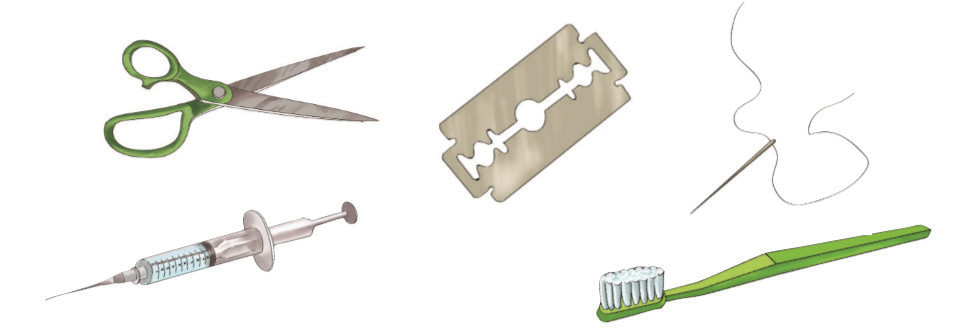

Sura ya Kumi na Tano
Virusi vya UKIMWI na UKIMWI
Sura ya Kumi na Nne, ulijifunza kuhusu magonjwa. Katika sura hii, utajifunza kuhusu njia za maambukizi ya Virusi vya UKIMWI (VVU) na namna ya kujikinga dhidi ya maambukizi. Pia, utajifunza kuhusu athari za maambukizi ya VVU na umuhimu wa kuwajali na kuwathamini watu wanaoishi na VVU na Upungufu wa Kinga Mwilini (UKIMWI). Umahiri utakaoupata katika sura hii, utakuwezesha kujilinda dhidi ya maambukizi ya VVU na UKIMWI. Pia, kutoa elimu kuhusu VVU na UKIMWI kwa kundirika lako na jamii.
Jamii yetu imekumbwa na janga la ugonjwa wa UKIMWI. UKIMWI husababishwa na VVU. VVU vinakaa kwenye sehemu za majimaji za mwili wa binadamu kama vile vidonda, damu, michubuko au mikato ya ngozi, na sehemu za siri.
Njia za maambukizi ya VVU
Angalia Kielelezo namba 1, kisha soma maelezo yanayofuata.

Kielelezo namba 1: Vifaa vinavyochangia maambukizi ya VVU